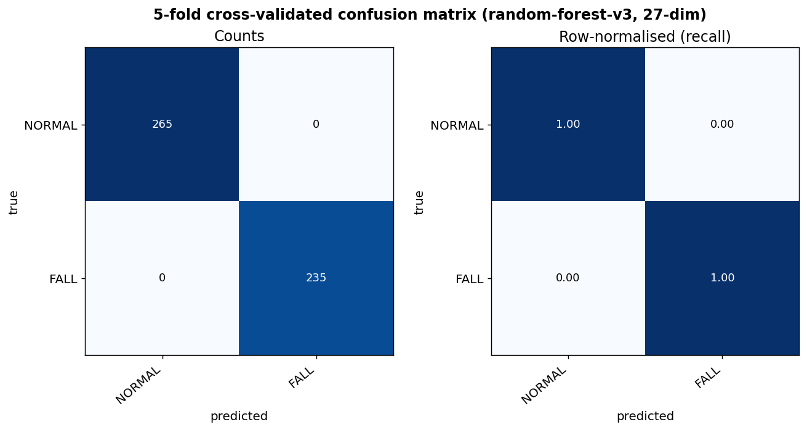
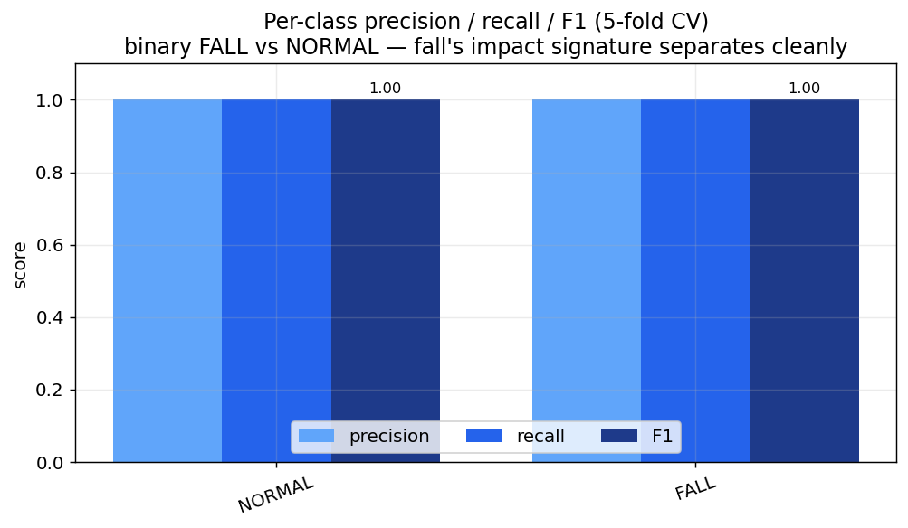
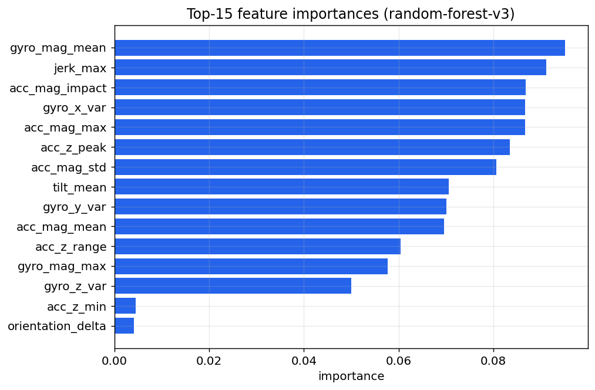

AI 平台
Azure IoT EdgeIoT Hub + ACR + Edge runtime
以 Azure IoT Edge 作為 AI platform：雲端集中管理、將推論模組下發到永遠開機的宿舍邊緣節點，搭配訓練／日常雙手錶 App，形成可在校園網路實機展示的 Edge MLOps 系統。
本系統以 oneM2M 三層架構為骨幹（末端裝置 / 邊緣推論 / 雲端編排）。為滿足「需有一個 AI platform」的要求，導入 Azure IoT Edge：IoT Hub 作為控制平面下發 AI 推論模組、ACR 作為版本化映像倉庫、宿舍電腦作為永遠開機且校園可達的邊緣節點。
AI 平台的價值不在「每次推論」，而在把 AI 模型的生命週期（打包 → 版本化 → 部署 → 更新）制度化。推論在邊緣執行，是 Edge AI 的刻意設計：低延遲、可離線。
在 MLOps 語境下，一個「AI / ML 平台」負責 AI 模型生命週期的工程化，而非親自跑每一次推論。下表把「平台職責」逐項對應到本專案的實現：
| 平台職責 | 本專案的實現 |
|---|---|
| 模型／服務打包為可部署單位 | posture-api 容器（重用既有 Dockerfile）＝ IoT Edge 模組 |
| 模型版本儲存／倉庫 | Azure Container Registry（映像 tag 版本） |
| 集中部署到目標節點 | Azure IoT Hub 下發部署清單到 Edge 裝置 |
| 遠端管理／更新 | IoT Hub set-modules：改清單即可換版本、回滾 |
| 持續更新閉環 | 訓練 App 回流 → 重訓 → 重建映像 → 重新部署 |
本專案採精簡範圍——平台負責「把 AI 模組部署／管理到邊緣」這條 Edge AI 部署生命週期；模型訓練維持在本機腳本。這是一個聚焦、完整、可運作的 Edge MLOps 子集，而非把訓練也搬上雲（後者列為未來工作）。
邊緣是「部署目標」，Azure IoT Edge 是把 AI 模組送上邊緣並持續管理的「控制塔」。
| 候選 | 結論 | 理由 |
|---|---|---|
| 純本機 docker（現況） | ✗ 不算平台 | 只是手動 docker build，無版本倉庫、無集中部署 |
| GCP Vertex AI | ✗ 已棄用 | Cloud IoT Core 2023 下線，無託管 cloud→edge 部署，邊緣只能手動 pull |
| Azure IoT Edge | ✓ 採用 | 原生「雲端→邊緣」託管部署：IoT Hub 下發、ACR 倉庫、可遠端更新；最貼 Edge MLOps |
邊緣 runtime 的取捨：目標機是 Windows 11 家用版 → 無 Hyper-V → 不能用 EFLOW。因此採 iotedgehubdev 模擬器（靠現有 Docker Desktop），足以展示「部署清單 → 模組在邊緣運行」的完整概念。
對應 oneM2M 三層：ASN＝手錶/手機；MN＝postureApi 邊緣模組；IN＝ThingsBoard。Azure IoT Edge 疊在 MN 之上，負責把 AI 模組部署到邊緣節點並管理。
flowchart TB
subgraph CLOUD["Azure 雲端 · AI 平台控制塔"]
HUB["IoT Hub (Free F1)
裝置註冊 · 部署清單"]
ACR["Container Registry
模組映像 (版本化)"]
end
subgraph EDGE["宿舍電腦 140.113.123.43 · 邊緣節點"]
SIM["IoT Edge runtime
iotedgehubdev 模擬器"]
MOD["postureApi 模組
RandomForest 27維 + HR 基線 · :8000"]
TB["ThingsBoard CE
規則鏈 · 告警升級 · :18080"]
SIM --> MOD
end
subgraph DEV["末端裝置 · 校園網路"]
WD["wear_os_app
日常偵測 + SOS"]
WT["wear_os_trainer_app
標註採集"]
PH["phone_app
守護者監看"]
end
ACR -- "映像" --> SIM
HUB -- "部署清單" --> SIM
WD -- "POST /api/infer" --> MOD
WT -- "POST /api/training" --> MOD
WD -- "telemetry" --> TB
PH -- "監看" --> TB
MOD -. "情境結果" .-> TB
| 元件 | 層 | 職責 |
|---|---|---|
| Azure IoT Hub | 雲端 | 註冊 Edge 裝置；保存／下發部署清單；遠端管理（portal 可見模組） |
| Container Registry | 雲端 | 儲存 posture-api 模組映像（版本 tag），邊緣由此拉取 |
| Edge runtime（模擬器） | 邊緣 | 依清單拉映像、起 edgeAgent / edgeHub / postureApi |
| postureApi 模組 | 邊緣 | AI 推論：IMU+HR → 情境 + 信心 + 特徵；/api/infer · /api/training · /api/demo/inject |
| ThingsBoard CE | 邊緣（編排角色） | 規則鏈 escalation、告警建立/清除/升級、戰情儀表板、雙向命令 |
| wear_os_app | 末端 | 日常偵測 + SOS，只顯示結果 |
| wear_os_trainer_app | 末端 | 採集標註資料餵 /api/training |
| phone_app | 末端 | 守護者監看、一鍵呼叫/派遣 |
新增不破壞：AI 模組重用既有 posture-api/Dockerfile；模型以 ./data 掛載進模組；後端 schema、ThingsBoard、手錶採集邏輯皆未改。
flowchart LR A["訓練 App 回流
/api/training"] --> B["本機重訓
train_fall_model"] B --> C["模型產出
.joblib"] C --> D["打包映像
build_and_push"] D --> E["下發清單
IoT Hub"] E --> F["邊緣運行
iotedgehubdev"] F --> G["手錶推論
/api/infer"] G -. "新資料" .-> A
情境分類器以真實跌倒資料集訓練，FALL / LIE_DOWN 近乎完美；SIT_DOWN 因 sit≈stand 為資料天花板（非程式 bug），已誠實揭露。



把「訓練」與「日常使用」拆成兩支獨立可並裝的 App，對應 AI 平台的「資料採集前端」與「部署產品」。
| App | applicationId | 角色 | 主要動作 |
|---|---|---|---|
| wear_os_trainer_app | …wear_os_trainer | 標註資料採集前端 | 選標籤 → 錄 5s → POST /api/training；顯示覆蓋度 |
| wear_os_app | …wear_os_app | 日常產品 | POST /api/infer 偵測 + SOS 升級 + 守護者聯動 |
兩支重用同一套原生心率模組（Health Services）與 50Hz IMU 採集邏輯；不同 applicationId 讓兩者可在同一支手錶並存安裝。
sequenceDiagram participant W as 手錶 wear_os_app participant M as postureApi 模組 :8000 participant T as ThingsBoard :18080 participant G as 守護者手機 W->>M: POST /api/infer (IMU 50Hz + HR) M-->>W: situation + confidence + features W->>T: telemetry (situation + features + GPS) T->>T: 規則鏈算 escalation → 建/升級告警 T-->>G: Notification Center 推播 G->>T: 一鍵呼叫 / 派遣 T-->>W: 下行命令 → 手錶響鈴 / 顯示「前往中」
推論在邊緣模組完成（低延遲、可離線）；escalation 與告警編排在 ThingsBoard；AI 平台（Azure）不在即時路徑上，而是負責「模組怎麼上到邊緣、怎麼更新」。
問題：學校 WiFi 常開「AP 用戶端隔離」，同一 AP 的兩台裝置互看不到 → 會擋手錶連筆電 :8000，也擋 ThingsBoard :18080。此問題與雲端選擇無關。
邊緣節點是宿舍電腦的校園路由 IP 140.113.123.43。手錶連它是「經校園路由到伺服器」，而非「同一 AP 的兩台 client 互連」，不受用戶端隔離影響。
| 路線 | 內容 | 風險 |
|---|---|---|
| 主力（live） | 手錶/手機 → 140.113.123.43:8000（模組）+ :18080（TB），走校園網路 | 需 8000/18080 入站放行、IP 穩定 |
| 保險（注入） | /api/demo/inject?scenario=collapse 在本機灌情境，戰情儀表板用該機瀏覽器演完整升級 | 零外部依賴，絕不出包 |
① open_firewall.ps1 放行入站 8000/18080；② 確認 140.113.123.43 穩定；③ 用手機連教室 WiFi 實測 http://140.113.123.43:8000/health，通了走主力、不通走保險。
| 項目 | 說明 |
|---|---|
| IoT Hub F1 | 永久免費層（8000 訊息/日，每訂閱 1 個），足夠 demo |
| ACR Basic | 小額月費；demo 後可 az acr delete |
| 模擬器 / Docker | 免費；無「不歸零」計費資源 |
| 憑證 | ACR 密碼、Edge 連線字串寫入 .env（不入版控） |
| 網路曝露 | 邊緣節點僅開放必要埠（8000/18080）；推論為校園內網流量 |
| 限制 | 說明 / 未來方向 |
|---|---|
| Windows 家用版無 EFLOW | 採 iotedgehubdev 模擬器（dev 工具）；升級路徑：WSL2 安裝 aziot-edge 真實 runtime |
| 訓練在本機 | 精簡範圍；未來可接 Azure ML 做雲端訓練／實驗追蹤／模型註冊表，形成完整 CT 管線 |
| 模型以 bind-mount 進模組 | 同機 demo 最省事；要部署到別台再改成 build 階段 baked 進映像 |
| SIT_DOWN 召回率低 | sit≈stand 為資料天花板（非程式 bug），已誠實揭露 |
| 檔案（cloud/azure/） | 作用 | 指令 |
|---|---|---|
setup_azure.ps1 | 建 RG / IoT Hub F1 / Edge 裝置 / ACR，寫 .env | .\cloud\azure\setup_azure.ps1 |
build_and_push.ps1 | build 模組映像 → 推 ACR | .\cloud\azure\build_and_push.ps1 |
gen_deployment.ps1 | 代入 .env → deployment.generated.json | .\cloud\azure\gen_deployment.ps1 |
run_edge.ps1 | 模擬器 setup + start（+ 推 IoT Hub） | .\cloud\azure\run_edge.ps1 -SetModules |
open_firewall.ps1 | 放行入站 8000/18080（系統管理員） | .\cloud\azure\open_firewall.ps1 |
az iot hub device-identity list 見 edge 裝置；ACR 有 posture-api 映像；docker ps 見 postureApi + edgeHub；scripts/verify_live.py 打 :8000/api/infer 回傳分類；portal IoT Hub → Devices → Modules 出現 postureApi（截圖佐證）。